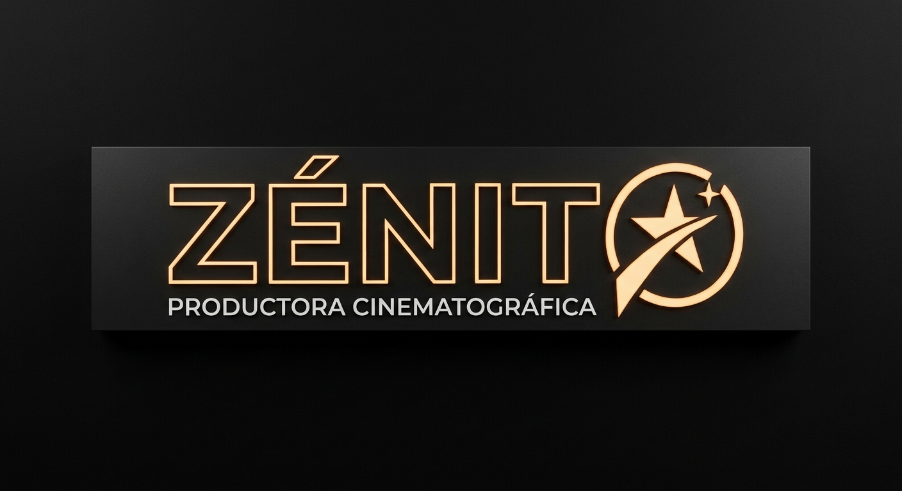

Somos una productora audiovisual dedicada a la creación de narrativas contemporáneas. Desarrollamos historias de alta fidelidad visual y enfoque minimalista para conectar con audiencias de todo el mundo. Este es nuestro logo:

Elena Rostova: Especializada en drama y suspenso psicológico. Aporta rigor interpretativo y versatilidad en proyectos independientes.
Julián Mercader: Intérprete de corte realista y fuerte presencia en escena. Formado en teatro clásico, enfoca su carrera en el cine de autor.
Sonia Vargas: Nueva figura del cine de vanguardia. Su background en expresión corporal define su dinamismo en la pantalla.
Zénit lo compone un equipo técnico integrado y enfocado en la precisión artística. Prescindimos de lo accesorio para centrar la atención exclusivamente en la historia.
Para proyectos, guiones en fase de desarrollo o consultas generales de prensa.
Email: hello@zenit.ficticio
Teléfono: +34 910 000 000
Instagram: @zenit.studio
YouTube: zenit.cinema